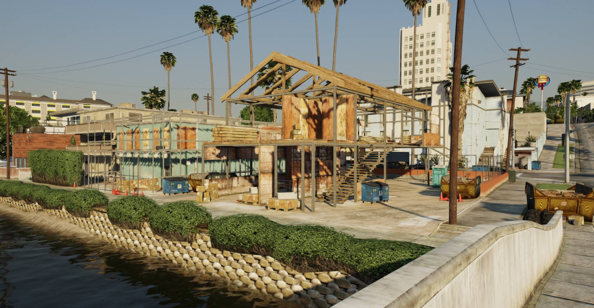
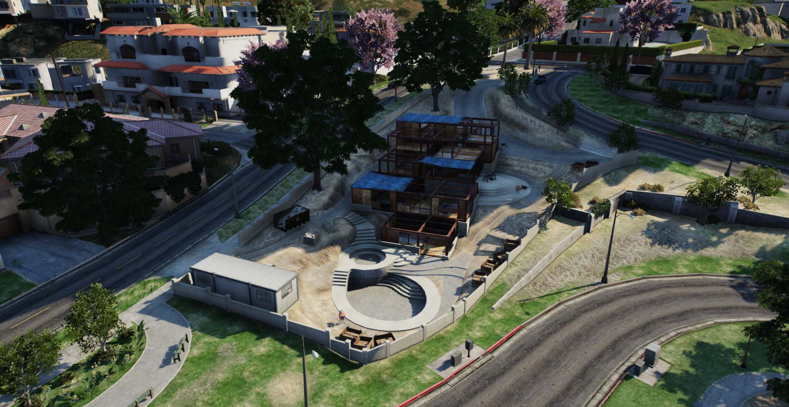
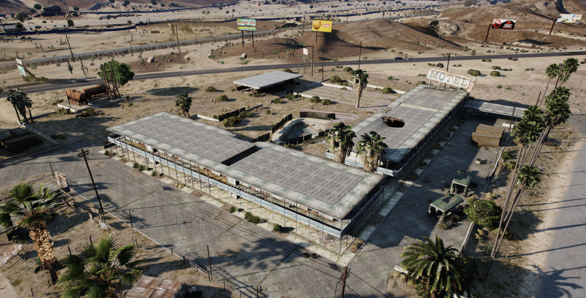
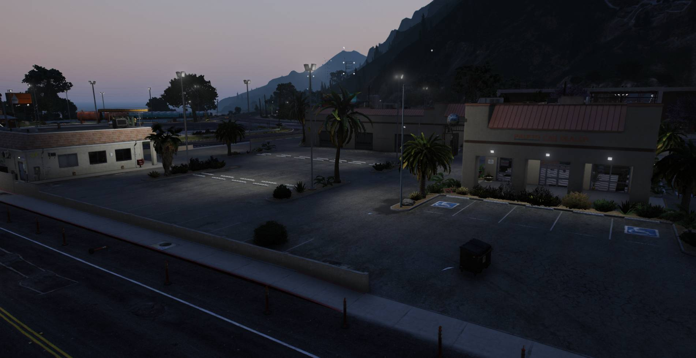

At SACRS our projects focus on enhancing community well-being and regional collaboration. Key initiatives include innovative urban planning strategies for resilient communities, addressing issues like infrastructure and affordable housing. We also prioritize educational outreach programs to empower residents for personal and economic growth. Through strategic partnerships, we aim to address social challenges and promote inclusivity, ensuring a lasting positive impact on the Southern Association of Community and Regional Studies. These projects listed are either in development or are finished.
Alta Site

This site will have a total of 4 buildings, with one having a bridge connecting it allowing for easy access and modern design. This project is currently 100% enviromently friendly.
Little Seoul Site

Here at Little Seoul near downtown Los Santos we have 2 small skyscrapers connected with a bridge in-between with planning to look futureistic and green in every way possible.
Vespucci Canals
This little home nestled in Vespucci with an amazing canal system leading you to marina and then to open sea. This project will allow everyone to see our artistic design in this beautiful estate.
Rockford Hills
Here in the heart of Rockford Hills we are building a state of the art mansion for our client. This build is planned to use recycled material and be enviromently friendly.
Sandy Shores Motel
Here is the run down motel. Where we recvied work to rebuild a new and improved motel in its place. This should help the citizens of Sandy Shores.
Paleto Garage & Cafe
Located at paleto near the gas station at 1062 we built a cafe and next door is the car dealer and mechanic shop. This replaced the barren lot that was orignally there.